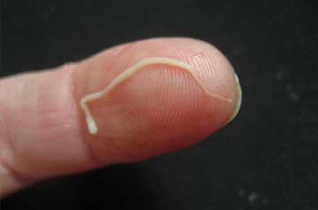

Kā ārsti, gribēdami nopelnīt, gandrīz noveda Ineta Radēviča līdz nāvei, izmantojot slavenās raidījumu vadītājas slimību.
Kāpēc cilvēki sapūst dzīvi un mirst, un neviens viņiem nepalīdz?
Kāpēc cilvēki sapūst dzīvi un mirst, un neviens viņiem nepalīdz?

Kāpēc ārsti no papilomas slimniekiem slēpj, ka tie mirst un kas notiek mūsu valsts slimnīcās - atklāta saruna ar Ineta Radēviča
Ineta Radēviča
Ineta Radēviča ir bijusī latviešu vieglatlēte, startējusi tāllēkšanas un trīssoļlēkšanas sacensībās.Viņa ir 2010. gada Eiropas čempione tāllēkšanā, kā arī 2011. gada Pasaules čempionāta sudraba medaļas ieguvēja.
Neviens nav pasargāts no patvaļas medicīnā. Kā ārsti sūta cilvēkus uz viņsauli naudas dēļ.
Korespondents: Ineta, kāpēc Jūs nekad neesat runājusi par savu nopietno slimību? Pēdējā laikā Jūs esat pazudusi no ziņu telpas un praktiski dzīvojāt izolācijā, nevienu neuzrunājāt.
Ineta Radēviča: Es uzskatu, ka tā ir mana personīgā darīšana un man nevajadzētu apgrūtināt citus ar savām problēmām. Turklāt es domāju, ka problēma nav tik kritiska, lai es būtu nopietni noraizējusies. Tāpēc es nolēmu, ka šo jautājumu neiztirzāšu publiski.
Korespondents: "Bet tagad Jūs esat nolēmusi ar to padalīties?"
Ineta Radēviča: Tagad es esmu tā izlēmusi, jā. Bet tā ir ne tik daudz vēlme pastāstīt par savu slimību, bet gan vēlme palīdzēt cilvēkiem, kurus, tāpat kā mani, parazīti saēd no iekšpuses – tā dēļ jebkurš var nomirt katru minūti. Neviens no mums nav aizsargāts no medicīniskām komplikācijām un tās var notikt ļoti pēkšņi. Šodien tu esi vesels cilvēks, bet rīt tu praktiski esi līķis, kuram nav iespēju izķepuroties. Un lielākā daļa ārstu tikai iekasēs no jums naudu, kamēr vien varēs, un mierīgi vēros, kā tu lēnām nomirsti.
Korespondents: "Ko Jūs ar to domājat?"
Ineta Radēviča: Tieši to, ko es teicu. Kad man pašai parādījās pirmie parazītu invāzijas simptomi, es pat nesapratu, kas noticis. Ne visi zina, ka tad, ja papilomas parādās uz ādas, ja sākat ātri nogurt un no mutes sāk nepatīkami ost, tas nozīmē, ka organismā vairojas parazīti. Galu galā es devos pie ārstiem, un viņi uzstādīja pareizo diagnozi. Tiesa, viņi to izdarīja tikai ar otro reizi, jo pirmo reizi viņi man vienkārši izrakstīja kaudzi nomierinošu līdzekļu, dažus papilomu krēmus un citas nejēdzības. Otrajā reizē viņi mani pārbaudīja rūpīgāk, veica daudz dažādu testu un teica, ka manā ķermenī dzīvo vismaz trīs veidu parazīti, kas aktīvi vairojas. Es biju šokēta un vērsos pie speciālista, kuru nemaz nebija tik viegli atrast – vērsos pie parazitologa. Viņš teica, lai vairs nelietoju iePirms izrakstītās zāles, to vietā viņš izrakstīja man daudzas jaunas zāles un teica, ka tām vajadzētu palīdzēt. Tikai vēlāk es sapratu, ka, aprēķinājuši summu, ko no manis varēja izvilkt, ārsti vēlējās tikai padarīt slimību vēl aktīvāk
Aptuveni divus mēnešus viss bija kārtībā. Jā, es jutos ļoti nogurusi, man arvien turpināja parādīties jaunas papilomas, periodiski kaut kas sāpēja, bet nekas kritisks veselības ziņā nebija. Tad pēkšņi nieru rajonā parādījās asas sāpes. Vienkārši vienā acumirklī. Vakarā, kad gāju gulēt, viss bija kārtībā. Un no rīta es tik tikko piecēlos no gultas, sāpes bija tik spēcīgas. Nekavējoties devos pie ārsta.
Korespondents: "Un ko ārsts teica?"
Ineta Radēviča: Bija apjukuši, krita panikā. Viņi teica, ka tie ir parazītu kāpuri, kas dzīvu sagrauž manu labo nieri. Viņi deva man izvēli, operēt vēderu un iztīrt visu vai iziet konservatīvu ārstēšanas kursu slimnīcā. Pretējā gadījumā nieres vienkārši atteiksies un kāpuri izplatīsies visā ķermenī, un sāks iznīcināt citus orgānus. Tas novestu pie letāla iznākuma. Šāda operācija manā vecumā ir ļoti bīstams solis, tāpēc vienīgā alternatīva bija slimnīca. Es neteikšu, kādu cenu viņi man nosauca, taču tā pārsniedza visas saprāta robežas. Un, protams, viss ietu garām kasei. Oficiāli procedūras tika veiktas par centiem. Tagad es saprotu, ka tas viss bija maldināšana peļņas nolūkā un viņi to darīja uz manas veselības rēķina. Bet, ja pastāv reāli nāves draudi, loģika nestrādā.
Es piekritu nosauktajai summai, trīs nedēļas pavadīju slimnīcā kā parasts pacients un pēc tam katru dienu tur ierados vēl papildus. Ārstēšanas laikā sāpes vispirms mazinājās un pēc tam vispār izzuda.
Korespondents: "Tātad tas tomēr palīdzēja?"
Ineta Radēviča: Ja nedomā par to, ka visu varēja atrisināt daudz vieglāk, tad jā - tas palīdzēja. Bet no viņu viedokļa skatoties, viņi vienkārši nopelnīja naudu uz pacienta rēķina. Turklāt palīdzība bija tik lokāla, ka veiksmīgi ietekmēja tikai viena veida parazītus. Kopumā bija trīs veidi, t.i. vismaz trīs šo briesmoņu perēkļi. Tad situācija attīstījās uz slikto pusi. Sākās sāpes sirdī, spiediens strauji lēkāja, lai gan tas nekad iepriekš nebija noticis, ļoti sāpēja galva, kājas sāka pampt.
Dažreiz es nevarēju visu dienu piecelties no gultas. Es joprojām regulāri apmeklēju ārstus, tērēju daudz naudas dārgām zālēm, dzēru tablešu kaudzes. Un katru dienu arvien vairāk sabruku. Ja godīgi, vienā brīdī es domāju, ka es tā arī nomiršu. Es ne mirkli nejutu, ka man kļūst labāk.
Korespondents: “Tomēr jūs sēžat šeit, manā priekšā. Kā jūs izķepurojāties? "
Ineta Radēviča: Palīdzēja nejaušība. Ciemos ieradās vecs draugs, kurš tagad strādā Veselības ministrijā. Viņš redzēja manu stāvokli, sāka apšaubīt ārstu teikto. Būtu muļķīgi visu noliegt, tāpēc es viņam visu izstāstīju, kā ir. Viņš mani izglāba. Pareizāk sakot, sākumā viņš ļoti sadusmojās un sāka tincināt manu ārstu vārdus. Tad viņš veica pāris zvanus un tajā pašā dienā viņi man atnesa jaunas zāles pret parazītiem, kas tika izstrādātas Veselības ministrijā. Toreiz es gandrīz atteicos, jo viņš pat nepaņēma no manis naudu un es pirmo reizi dzīvē redzēju šīs zāles. Bet, no otras puses, nebija ko zaudēt, tāpēc nolēmu pamēģināt.
Jau nākamajā rītā pirmo reizi piecēlos no gultas 15 minūtes pēc pamošanās, nevis pēc 3-4 stundām. Un pēc 12-14 dienām es sapratu, ka sāpes sākušas mazināties. Pamazām pazuda arī komplikācijas un citi simptomi. Kā man paskaidroja ārsti, kurus ieteica draugs, zāles iznīcināja parazītus un apturēja to spēju vairoties. Jums nav ne mazākās nojausmas, kas no manis nāca ārā pirmajās dienās pēc tam, kad es sāku lietot šīs jaunās zāles. Tas bija gluži kā šausmu filmā. Jebkurā gadījumā, jau pēc 3 nedēļām es atkal jutos vesela. Ņemot vērā to, cik nopietns bija mans stāvoklis, tas ir vienkārši brīnums, ka man izdevās attīrīt savu ķermeni un atveseļoties tik īsā laikā.
Korespondents: “Tātad Jums ir izdevies attīrīt savu ķermeni no visiem parazītiem? Un kas notika ar ārstiem, kuri jūs "ārstēja" sākumā? "
Ineta Radēviča: Varbūt tas izklausās neticami, it īpaši ņemot vērā manu stāvokli, bet jā - es pilnībā attīrīju savu ķermeni no parazītiem un atguvos. Ārstēšanas sākumā diagnostika parādīja, ka parazīti gandrīz pilnībā apsēduši zarnas, dzīvoja asinsvados, to izkārnījumi nokļuva asinīs, kas izraisīja iekaisumu un neatlaidīgi iznīcināja sirdi. Kopumā viss ķermenis bija pilns ar dažādiem tārpiem. Turklāt izrādījās, ka es jau sen biju ar viņiem inficējusies, taču dažādu apstākļu sakritību rezultātā tie pēkšņi sāka aktīvi vairoties, kas mani gandrīz nogalināja. Pēc labu ārstu teiktā, kuri novēro manu stāvokli kopš es atteicos no baltos halātos tērpto slepkavu pakalpojumiem, vismaz divi no trim Latvijas iedzīvotājiem ir inficēti ar parazītiem.
Runājot par ārstiem, kuri no manis izkrāpa naudu, viņi tika arestēti un šobrīd sniedz liecības. Izrādās, ka strādāja vesela organizēta dažādu iestāžu medicīnas darbinieku grupa, kas guva peļņu uz cilvēku rēķina. Tāpēc es gribu brīdināt cilvēkus būt ļoti uzmanīgiem. Ja šādi viņi izturējās pret pazīstamu cilvēku, tad man ir bail domāt, ko viņi dara ar tiem, kuriem nav iespēju sevi aizstāvēt pret ārstu nelietībām.
Parasti katrs pats var diagnosticēt. Ja uz ādas aug papilomas, no mutes nāk nepatīkama smaka, bieži sāp galva, jūs bieži esat noguris, no rīta ir grūti piecelties no gultas - es dodu 90%, ka esat inficēts ar parazītiem. Sirdslēkmes, insults, vēzis, sepse, diabēts, hipertensija, artrīts, osteoartrīts - gandrīz jebkuru slimību var izraisīt tārpi vai amēbas jūsu ķermenī. Man tik tikko izdevās izvairīties no nieru vai koronārās mazspējas. Esmu piedzīvojis 5-6 mikroinfarktus parazītu dēļ, jo tie izdala toksīnus, kas nonāk sirdī.
Korespondents: "Vai varat pastāstīt mums par zālēm, kuras Jūs izārstēja?"
Ineta Radēviča: Protams. Šīs zāles ir Wortex, tās ir jaunas zāles, ko izstrādāja kopā Latvija un Šveice. Šobrīd tās ir pieejams tikai to valstu teritorijā, kur tās izstrādātas, jo ražošanas apjoms ir mazs un to nav pietiekami, lai apmierinātu Latvijas un Šveices iedzīvotāju pieprasījumu

Zāles ir unikālas pēc savas formulas. Cik es zinu, tās tika izstrādāts apmēram 7 gadu garumā un tika palaistas apgrozībā diezgan nesen, tiklīdz klīniskie pētījumi Ženēvā un Rīgā tika veiksmīgi pabeigti. Šīs ir vienīgās universālās zāles pret parazītiem, kas iedarbojas uz jebkuru parazītu paveidu. Tās jau pirmajās dienās pilnīgi attīra ķermeni un pārtrauc parazītu reprodukcēšanos, kas manāmi atvieglo inficētā organisma komplikācijas. Ar šīm zālēm var ārstēties arī pats, bez ārstu palīdzības. Jums vienkārši jāievēro norādījumi, kā es to darīju.
Korespondents: “Jūs teicāt, ka Jums nekas nebija jāmaksā par šīm zālēm? Un kur tās var dabūt parastie cilvēki? "
Ineta Radēviča: Man nebija jāmaksā, jo nevienam tas nav jādara. Pašlaik Wortex tiek izplatīts īpašas valdības programmas ietvaros gandrīz bez maksas. Problēma ir tajā, ka ārsti biežāk vēlas izrakstīt pacientiem dārgas zāles vai procedūras, jo viņi par to saņem daļu peļņas, tāpēc viņi arī neiesaka šīs lētās zāles.
Pavisam nesen Veselības ministrija ir izdomājusi, kā rīkoties šajā situācijā.Viņi izveidoja īpašu pasūtījuma veidlapu, kur pieprasījumu var nosūtīt jebkurš valsts pilsonis.Tagad šajā procesā nav birokrātijas.Jums vienkārši jānorāda savs vārds un tālruņa numurs, lai valsts programmas operators ar jums sazinātos, konsultētos un norādītu, kad būtu ērtāk piegādāt zāles.
Kā redzat, viss ir ļoti vienkārši un caurspīdīgi, katrs cilvēks, kuram ir dators vai tālrunis ar piekļuvi internetam, var nosūtīt pieprasījumu un saņemt Wortex.
Korespondents: "Vai vēlaties vēl ko teikt, pirms noslēdzam interviju?"
Ineta Radēviča: Es gribētu novēlēt, lai neviens cilvēks nekad nepiedzīvotu to stāvokli, kas man bija jāpārdzīvo. Neuzticieties ārstiem, ja viņi saka, ka Jums nav parazītu un ka problēma ir citā. Viņi vienkārši vēlas iekasēt no Jums naudu. Ja vēlaties attīrīt ķermeni un pagarināt mūžu - atstājiet pieprasījumu zālēm Wortex. Ikviens to var izdarīt.
 Karīna Liepniece
Karīna Liepniece
 Marija Alsberga
Marija Alsberga

 Liepniece Katrīna
Liepniece Katrīna

 Arnis Gudelis
Arnis Gudelis
 Juris
Juris
 Pauls Darkovskis
Pauls Darkovskis
 Natālija Leišmane
Natālija Leišmane
 Andris Salkalniņš
Andris Salkalniņš
 Vija Zalcmane
Vija Zalcmane


 Mairis Rupainis
Mairis Rupainis
 Valdis Simonovičs
Valdis Simonovičs
 Raimonds Moks
Raimonds Moks
 Aleksandrs Burkovskis
Aleksandrs Burkovskis
 Monika Zavacka
Monika Zavacka
 Antra Zilverte
Antra Zilverte
 Katrīna Baušķeniece
Katrīna Baušķeniece
 Jūlija Latkovska
Jūlija Latkovska
 Ingrīda Niedra
Ingrīda Niedra
 Airita Kalniņa
Airita Kalniņa
 Rita Račkovska
Rita Račkovska
 Silvija Martinsone
Silvija Martinsone
 Kalvis Simpsons
Kalvis Simpsons
 Ginta Rasberga
Ginta Rasberga
 Nellija Lipinska
Nellija Lipinska